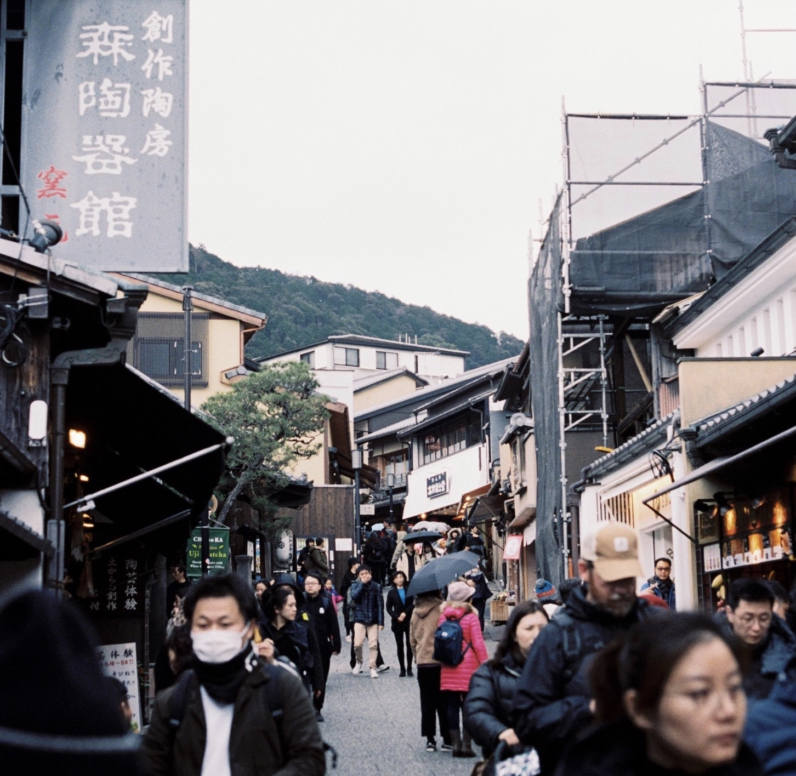
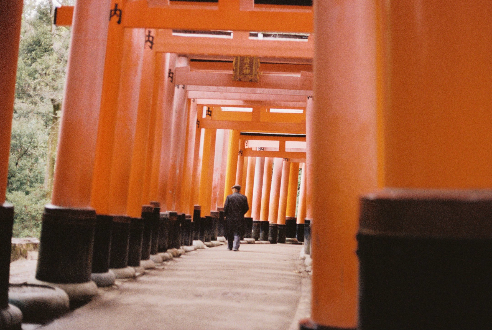
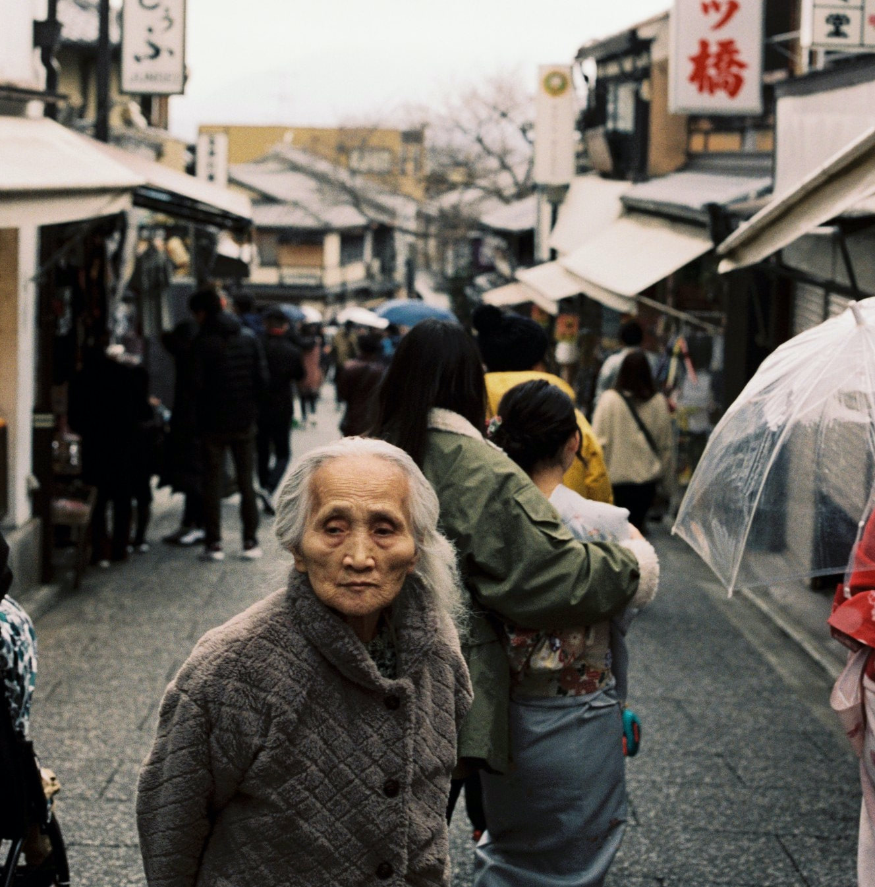
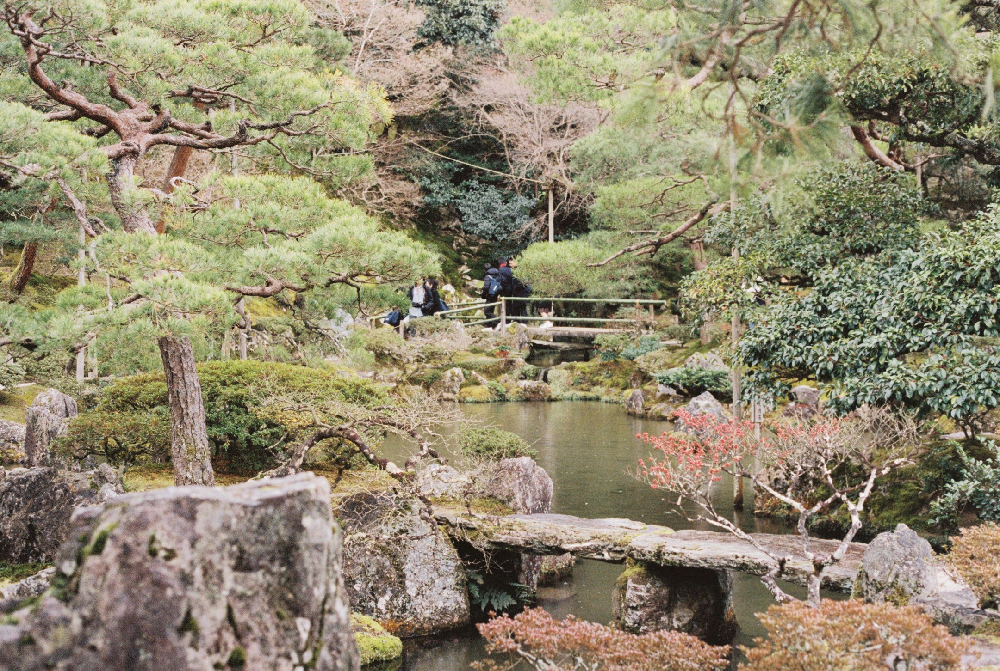
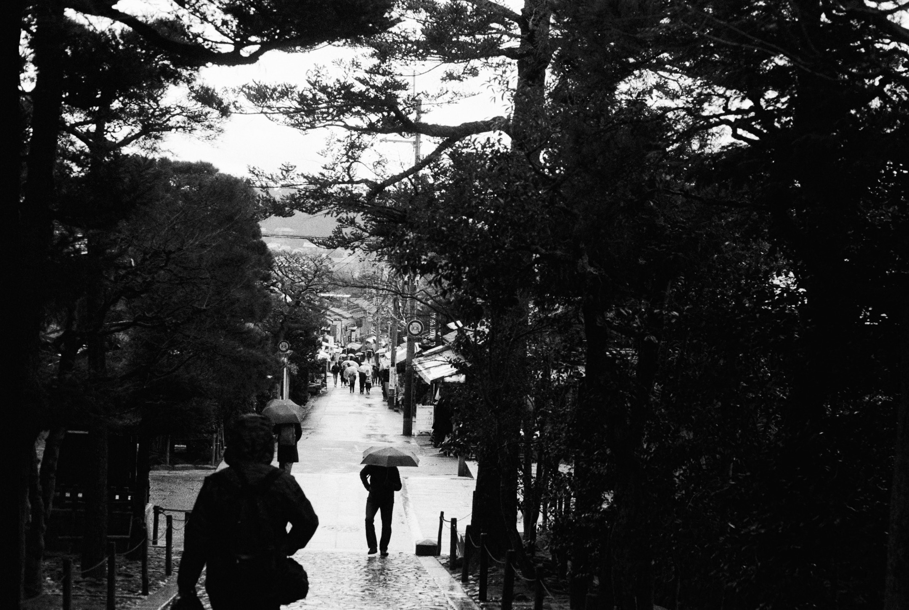

Kyoto

Kyoto is the old capital of Japan, the city is very traditional and home to many beautiful Buddhist temples, gardens, Imperial palaces, traditional houses and Shinto shrines. Kyoto is also home to one of japans most iconic landmarks the Fushimi Inari Taisha. If you are to stay in Kyoto I highly recommend staying in a traditional place and sleeping on the floor for an authentic cultural experience. Kyoto is relatively small, I recommend hiring bikes to get around as it is quite flat and you are able to see majority of the city in a day on a bike if you're efficient.
Fushimi Inari Taisha

The Fushimi Inari Taisha is the iconic orange gates, they're a great experience and the Shinto shrine that accompanies the gates is beautiful also. Enjoy a peaceful stroll through the gates, you can either do the whole walk or until you feel you have done enough. Finish off the walk by grabbing a great bite to eat from the many street vendors at the entrance.
The Streets

Strolling through the streets of Kyoto and taking in the traditional buildings makes for an activity within itself, walk down to the main square and take a stroll through the food markets. Pop into stores on this walk and maybe push yourself outside of your comfort zone and try/experience something new.
Higashiyama Jisho-ji

This is a beautiful temple and garden that represents the Higashiyama Culture of the Muromachi period. It contains a traditional sand garden that is intricately detailed and makes for a very serene and peaceful stroll. Witnessing the workers maintain the garden is also very interesting as their work ethic and care they put in is quite impressive.
Bike Riding

The streets of Kyoto are mostly quite flat, Kyoto is also a fairly small area. I recommend hiring a bike for the day if you are looking to make the most of your time as it is possible to see almost the whole city in a day. The ride is also very beautiful and allows you to get lost and explore areas that may not be conventionally suited to tourists but will make for a memorable time.